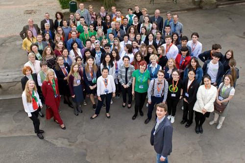
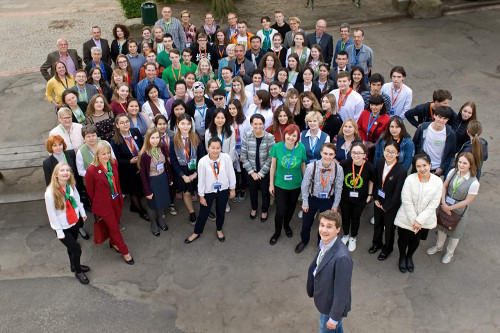

Еколошка ученичка група "Гимзелени"
Зовемо се "Гимзелени", постојимо од 2011. године и организујемо пројекте са циљем подизања еколошке свести у нашој школи. Наш рад подржавају Pasch-пројекат и Гете-институт Београд. Да ли знаш да је за разградњу једне жваке потребно 5 година, за распадање тетрапака 100 година, а за распадање пластичне кесе 500 до 1000 година?! Конзерви је потребно 200 до 500 година да се разложи, а стаклу чак 4000 година.
Да ли имаш времена да чекаш?
Време је да се нешто предузме!
УКЉУЧИ СЕ!
Покушавамо да повежемо различите медије и знање немачког језика са еколошким темама!
МИ:
- САКУПЉАМО, СОРТИРАМО И РЕЦИКЛИРАМО
- ОД СТАРОГ ПРАВИМО НОВО, нпр. УКРАСЕ ЗА ЈЕЛКУ ОД СТАРИХ СИЈАЛИЦА,ДУГМИЋА,ПОКЛОПАЦА ЗА ТЕГЛЕ...
- ОРГАНИЗУЈЕМО ИЗЛОЖБЕ ЕКОЛОШКИХ ФОТОГРАФИЈА И СТРИПОВА
- СНИМАМО ЕКОЛОШКЕ ФИЛМОВЕ
- ПРАВИМО ЛУТКЕ ОД СТАРИХ ЧАРАПА, ПИШЕМО И ДРАМАТИЗУЈЕМО КРАТКЕ СКЕЧЕВЕ
- СЛАВИМО 22. АПРИЛ , "ДАН ПЛАНЕТЕ ЗЕМЉЕ" СА МУЗИКОМ, ПРЕЗЕНТАЦИЈАМА И ГОСТИМА
- ОРГАНИЗУЈУЕМО ХУМАНИТАРНЕ АКЦИЈЕ И ПОДРЖАВАМО ДЕЦУ КОЈОЈ ЈЕ ПОТРЕБНА ПОМОЋ
- СКЛАПАМО НОВА ПРИЈАТЕЉСТВА
- СЕ ЛЕПО ЗАБАВЉАМО
Да ли ће наша школа постати боље, чистије и интересантније место за живот зависи, пре свега, од нас самих!!!
Више информација
pasch-globalUmwelt-Wissenschaft
Facebook страница
Координатор пројекта: проф. Валерија Јона Андрејевић
ИНТЕРНАЦИОНАЛНА ЕКОЛОШКА КОНФЕРЕНЦИЈА И СТУДИЈСКО ПУТОВАЊЕ
БРЕМЕН 10-13.МАЈ 2019.
Еколошка секција „Гимзелени“ гимназије „Урош Предић“ Панчево пријавила се ове школске године на међународни конкурс који је расписао Goethe-Institut Москва ” Eкологија чини школу” са пројектом „Околина је као стакло, не дозволи да се уништи“.
Од 182 пристигла рада из разних земаља, 11 пројеката је проглашено победницима и награђено путовањем у немачки град Бремен на „ПЕТУ МЕЂУНАРОДНУ ЕКОЛОШКУ КОНФЕРЕНЦИЈУ “. Пројекат Гимзелених је награђен путовањем на конференцију која се оджала у Бремену од 10.маја до 13.маја 2019.
Поред екипе из Србије, своје пројекте представљали су и ученици са наставницима из Русије (Москва, Новосибирск,Саранск), Украјине (Чернигов), Сједињених Америчких Држава (Чикаго), Белорусије (Новополотск), Кине ( Хангзхоу), Јерменије (Јереван), Грузије (Сугдиди), Казахстана ( Актау), Киргистана ( Нарин), Узбекистана ( Ургенч) и Немачке (Бремен).
У тиму панчевачке гимназије “Урош Предић“ и наше државе били су: Валерија Јона Андрејевић –професорка немачког језика, Елена Драгосављевић- професорка хемије, Александра Вукашиновић-ученица трећег разреда, Стефани Нешковић-ученица другог разреда и Борко Вицановић- ученик четвртог разреда.
Иза учесника конференције је четири дана богатог програма, првог дана су се упознавали са тимовима на радионицама. Радионице су посебно имали ученици а посебно професори. Другог дана су презентовали пројекте и свој дугогодишњи рад. Трећи дан су оформили тимове и правили планове за предстојеће пројекте. Тим наше државе је заједно са тимовима Јерменије и Кине радио на новом заједничком пројекту, за који се надамо да ће бити одржив и остварен у будућности. Обишли су музеј науке и технике „Универзум“. Четвртог дана конференције поред радионица сви тимови обишли су Универзитет у Бремену. Наравно поред рада, организатори су омогућили и обилазак града и упознавање са знаменитостима Бремена.
Са конференције доносе дивне утиске и успомене, проширили су знања из области екологије, усавршавали знање немачког језика, добили идеје за даљи рад и нове пројекте, упознали много добрих, квалитетних људи који имају исте циљеве, склопили нова пријатељства и сјајно се забавили. Путовање, као и све досадашње активности, су подржали PASCH и Goethe-Institut Београд.
 

"Гимзелени" представљају школу на 5. интернационалној конференцији о екологији у Бремену
Еколошка секција ``Гимзелени`` постоји још од 2011. године и организује пројекте са циљем подизања еkолошке свести у нашој Школи. Школске 2017/2018 спроведен је пројекат под мотом ``Околина је као стакло, не дозволи да се уништи`` у оквиру кога су ученици сакупљали стакло, правили украсе за јелку од поклопаца за тегле и са многобројним гостима у априлу 2018. године традиционално обележили Дан планете Земље. Једна учионица је уређена као ``зелена учионица`` где су гости и домаћини представили своје пројекте и уредили штандове.У гостима су били:
- Средња пољопривредна школа ``Јосиф Панчић`` -Еко-рукотворине (Марковић Верица,проф. пољопривредне групе предмета, Кораћ Ана,проф.француског језика и ученици: Срећков Сава, Грубић Алекса, Јакша Ендре, Матијевић Предраг и Кухарик Душан)
- МНРО Панчево - пројекат ручне израде еколошког папира ( Ксенија Александра Милосављевић, растаураторка, Јован Златановић, члан удружења и персонална асистенткиња Драгана Новаков)
- НВО "Слобода за животиње" Београд - промоција биљне хране , еколошког односа према животној средини и према живим бићима ( Миљковић Даница, дипл. технолог) Домаћини "Гимзелени" су презентовали свој рад у току протеклих 8 година и изложили креативне радове ( украсе за јелку, Еко-стрипове, Еко-фотографије, Еко-луткице итд.) Заинтересовани ученици су у току једног школског часа могли да слушају презентације, након тога разгледају штандове и ближе се упознају са радом учесника. У овом пројекту нас је подржала проф. психологије Тамара Тодоровић.
Са овим пројектом су "Гимзелени" учествовали на међународном конкурсу Гете - института Москва под називом "Екологија чини школу". Жири у саставу: Слободан универзитет у Берлину, Универзитет у Бремену, Висока школа за пољопривреду и педагогију екологије у Бечу, Бранденбуршки технолошки универзитет Cottbus-Senftenberg и Руско-немачка канцеларија за екологију нас је позвао да представимо нашу школу и земљу на Петој интернационалној конференцији о екологији у Бремену од 10. до 13. маја 2019. године.
Координатор пројекта је проф. немачког језика Валерија Јона Андрејевић, стручни сарадник проф. хемије Елена Драгосављевић, а учествују ученици другог, трећег и четвртог разреда: Стефани Нешковић, Александра Вукашиновић и Борко Вицановић. Пројекат, као и наше путовање за Бремен подржавају Pasch-Београд и Гете-институт Београд.